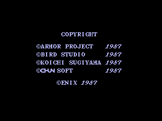
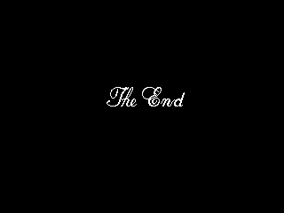
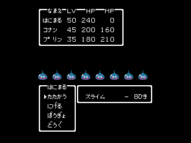
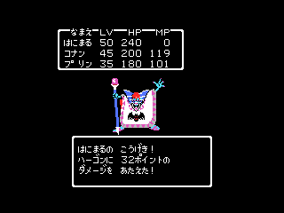
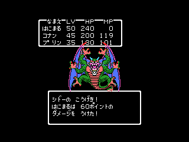
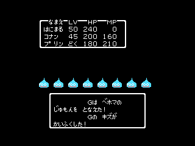
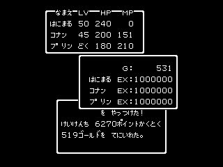

調査のきっかけは、DQ2 を MSX に移植した川俣晶氏の著書「ENIX移植プログラマー戦記」にある、移植のときに「ENIXにもナイショの追加機能」を2つ入れた、という話である。中身は明かされておらず、どちらも過去にゲーム情報誌などで一度は知られた情報だという。よく知られた DQ2 の隠し機能は、MSX1版の「あぶない水着」のグラフィックと、仲間の名前を変える操作(§4.1)だが、後者はファミコン版にもあるので、MSX版で加えた機能かどうか怪しい。そこで、キー操作から洗い出すことにした(DQ1 はついでに調べた)。
1. 調査の範囲と方法
1.1 対象
| 略称 | ROM | 容量 |
|---|---|---|
| DQ1 MSX1版 | ドラゴンクエスト(MSX1/2両用) | 128KB |
| DQ1 MSX2版 | ドラゴンクエスト(MSX2専用) | 128KB |
| DQ2 MSX1版 | ドラゴンクエストII(MSX1/2両用) | 256KB |
| DQ2 MSX2版 | ドラゴンクエストII(MSX2専用) | 256KB |
確かめた隠し技は、徳間書店「ゲーム十字軍 Vol.2」108ページに載っているもののうち、次の3つ。
- DQ1 ウル技① 電源を入れたら TAB・SHIFT・CAP・スペース・カーソルの右と左と下の7つを同時に押して待つと、敵キャラが次々に自己紹介する(MSX1/2両用版のみ)
- DQ1 ウル技③ ドラゴンと会ったら「YUJI」と入力してから戦うと、必ず会心の一撃になる
- DQ2 名前設定画面 STOP と SELECT を押しながら自分の名前の4文字目を打ちこむと、仲間の王子と王女の名前設定画面になる。復活の呪文の最後の1文字を打ちこむときでもできる
1.2 方法
- 4本の ROM の全バンクから、キーボードを読む処理を探した。BIOS の SNSMAT(0141h)の呼び出し、BIOS のキーバッファ(NEWKEY など)の参照、キーボード用 PPI(ポート A9h・AAh)の直接入出力、CHGET などのキー入力ルーチンの呼び出しが対象。
- 見つかった読み取り処理から、読んだ結果を入れる変数を特定し、その変数を判定している箇所をすべて逆アセンブルして読んだ。
- 必要なものは openMSX(Panasonic FS-A1ST)で実際に動かして確かめた。ブレークポイントで読まれたキーの行や乱数の値を記録し、画面を撮って結果を比べた。
2. キーボードの読み方
2.1 DQ1
MSX1版・MSX2版とも、キー入力のルーチンは1つで、次のキーだけを読む。読んだ結果はボタンのビットにまとめて変数 C047h に入れる。
| ビット | 意味 | キー |
|---|---|---|
| 10h | 上 | カーソル上、テンキー8、ジョイスティック |
| 20h | 下 | カーソル下、テンキー2、ジョイスティック |
| 40h | 左 | カーソル左、テンキー4、ジョイスティック |
| 80h | 右 | カーソル右、テンキー6、ジョイスティック |
| 0Dh | 決定 | スペース、RETURN、トリガA |
| 02h | 取消 | SHIFT、トリガB |
キーボードの行で言うと、行6(SHIFT)・行7(RETURN)・行8(スペースとカーソル)・行9と行10(テンキー)だけを読む。C047h の判定はすべてビット単位で、「AとBを同時に押す」のような組み合わせを比べる箇所はない。
これとは別に、MSX1版だけ、起動時に一度だけ行7を直接読む箇所がある(§3.1)。
2.2 DQ2
MSX1版・MSX2版とも同じルーチン(バンク30)で、行5〜行10を読み、変数 E02Fh に入れる。DQ1 と違って SELECT と STOP を独立したビットとして読む。
| ビット | 意味 | キー |
|---|---|---|
| 01h | 決定 | スペース、RETURN、X、トリガA |
| 02h | 取消 | SHIFT、ESC、Z、トリガB |
| 04h | SELECT | SELECT |
| 08h | STOP | STOP |
| 10h〜80h | 上・下・左・右 | カーソル、テンキー、ジョイスティック |
このビットの並びは、ファミコンのコントローラを読んだときの並び(A・B・SELECT・START・上・下・左・右)と同じ。ファミコン版の作りをそのまま引き継いだものと思われる。
3. ドラゴンクエスト
3.1 敵キャラの自己紹介(ウル技①)
結論:記事どおりにできる。ただしゲームが見ているのは SELECT と RETURN の2つだけで、記事の7キー同時押しは、キーボードの配線の性質(ゴースト)を使ってこの2つを押したことにしている。
MSX1版は起動直後(5E2Eh)に SNSMAT で行7を読み、ビット7(RETURN)とビット6(SELECT)が両方押されていると、モンスターを順番に表示するモードに入る。敵の番号(C0E0h)を 0 から 27h まで回し、モンスターを1体ずつ表示し続ける。
MSXのキーボードは、キーが行と列の格子(マトリクス)につながっている。キーを3つ以上同時に押すと、押していないキーまで押されたように読めることがある(ゴースト)。記事の7キーはこの格子の上で次のようにつながる。
- TAB(行7)と CAP(行6)は同じ列(ビット3)
- CAP と SHIFT は同じ行6
- SHIFT(ビット0)とスペース(行8のビット0)は同じ列
- スペースとカーソルの左・下・右は同じ行8(ビット4・6・7)
この結果、行7でもビット0・3・4・6・7の列が導通して、押していない SELECT(ビット6)と RETURN(ビット7)が押されたように読める。
openMSX(キーのゴーストを再現する設定の FS-A1ST)で起動時に押すキーを変えて試した。
| 押したキー | 起動時に読んだ行7の値 | 結果 |
|---|---|---|
| 記事の7キー | 26h(ビット7・6・4・3・0 が押下) | モンスター表示モード |
| SELECT と RETURN | 3Fh | モンスター表示モード |
| 何も押さない | FFh | 通常のタイトル画面 |
7キーで読んだ値は、配線から予想したビット(0・3・4・6・7)とぴったり一致した。ゴーストの起き方はキーボードの作りで変わるため、7キー同時押しが効くかどうかは本体によって違う可能性がある(推定)。
MSX2専用版では、この起動時の判定そのものが削除されていた。記事の「MSX1、2両用版でしかできない」と合う。
3.2 「YUJI」で会心の一撃(ウル技③)
結論:ドラゴンに必ず会心の一撃が出るのは本当。ただし「YUJI」は関係ない。コマンド入力の画面で1〜2秒何もしないで待ってから攻撃すれば、何も打たなくても同じになる。
「YUJI」は読まれていない
Y・U は行5、J・I は行3にある。§2.1 のとおり DQ1 はこの2行をどこでも読まない。戦闘中に SNSMAT で読まれた行を記録しても、行6〜10しか出てこなかった。BIOS のキーバッファも使っていないので、文字を打っても、ゲームには何も押されていないのと同じ。
会心の一撃の判定
攻撃するときの判定(7D79h〜)は次のとおり。
敵の番号が 26h・27h(竜王)なら会心なし A = 敵の番号 として乱数ルーチンを呼ぶ 乱数の上位バイトの下5ビットが 0 なら会心の一撃(確率 1/32)
乱数が止まる
乱数ルーチン(4497h)は、16ビットの値(C094h〜C095h)に、呼ばれたときの A レジスタの値を混ぜて次の値を作る。この式には、A の値ごとに1つずつ「固定点」がある。A = 0 のときの固定点は 037Eh で、一度 037Eh になると、A = 0 で何度呼んでも 037Eh のまま変わらない。
キー入力のルーチンは毎フレームこの乱数ルーチンを呼んでいて、何も押していなければ A = 0 で呼ぶ。そのため、コマンド入力の画面で何もせずにいると、1〜2秒で乱数が 037Eh に止まる。
乱数が 037Eh のときに攻撃すると、会心の判定に使う値は「3 ＋ 敵の番号」の下5ビットになる。これが 0 になるのは、敵の番号が 1Eh のときだけで、1Eh はドラゴンの番号だった。
試した結果
ドラゴンの1歩手前の状態から、攻撃するまでの時間と「YUJI」の有無を変えて試した。
| 試し方 | 攻撃するときの乱数 | 結果 |
|---|---|---|
| コマンドが出てすぐ攻撃(3回) | 毎回違う値 | 普通の攻撃(ダメージ 23〜37) |
| 1〜2秒待ってから攻撃(5回) | 037Eh | 毎回会心の一撃(127 ダメージで撃破) |
| 「YUJI」と打ってから攻撃(5回) | 037Eh | 毎回会心の一撃 |
ほかの敵についても調べた。
- 敵の番号を 00h〜26h の39種類に差し替えて、待ってから攻撃:会心はドラゴンだけ
- 洞窟の中のランダムエンカウント21回:乱数が 037Eh で止まった状態で攻撃した12回は、すべて会心なし。会心が出た1回は、乱数が止まる前に攻撃したときの偶然
「YUJI」と4文字打っている時間が、ちょうど乱数が止まるまでの待ち時間になっていた、というのが真相と考えられる。ドラゴンの番号が会心になる値と重なったのは偶然で、ドラゴンだけを特別に扱う処理はない。
4. ドラゴンクエストII
4.1 仲間の名前設定画面
結論:記事どおり。条件は「SELECT ＋ STOP ＋ 決定(スペース・RETURN・X・トリガA)」の同時押し。
名前を決めたときと、復活の呪文を入れ終えたときの両方の処理が、同じ場所(バンク15、実行時 4415h)に合流する。その直後(441Bh)で E02Fh を1回だけ読み、決定・SELECT・STOP の3ビット(0Dh)がそろっていれば、仲間の名前を入れ直す処理に進む。処理の要旨は次のとおり(実際のコードは補助ルーチンを呼ぶ形で書かれている)。
E02F を読む and 0Dh ; 決定(01h) + SELECT(04h) + STOP(08h) cp 0Dh jp nz,(通常の処理へ) 仲間の名前の領域を初期化して、名前設定画面へ
判定は1回だけで、最後の文字を決定したほぼ直後に行われる。復活の呪文で、52文字目を入れる直前の状態から試した。
| 52文字目の入れ方 | 判定時の E02F | 結果 |
|---|---|---|
| スペースだけ | 00h | そのまま再開 |
| SELECT と STOP を押しながらスペース | 0Dh | 仲間の名前設定画面になる |
SELECT と STOP を押したまま文字を入れ続けようとすると、名前入力の画面がキーを離すのを待つため先へ進まない。記事のように「押しながら最後の文字を打ちこむ」のが正しい手順。
4.2 エンディング後の隠し戦闘モード(記事に載っていない)
キーの読み取りを調べている途中で見つかった。エンディングのあとに特定の操作をすると、パーティでモンスターと連戦できる。連戦が終わると、キーを押すたびに曲が変わる「曲を聴くモード」になる。MSX1版・MSX2版の両方で確認した。
操作
- スタッフロールの最後に「COPYRIGHT」の画面が出たら、「上 ＋ 決定」を押し、そのまま押し続ける
- 「COPYRIGHT」が消えて画面が真っ黒になり、ENIX のロゴが出るまで押したままにする(「The End」まで押し続けてもよい)
- 「The End」が表示されたら、「上 ＋ 決定」を離し、「下 ＋ 取消」を押す。効果音が鳴り、連戦が始まる
キーボードなら、上 = ↑、決定 = SPACE または RETURN、下 = ↓、取消 = SHIFT または ESC。ジョイスティックなら、上下とトリガ A・B でもよい。


エンディングの処理は、COPYRIGHT が消えて ENIX のロゴが出るまでの黒い画面の間(1秒足らず)に、キーの状態(E02Fh)を一度だけ記録する。「The End」を表示したあと、記録した値が 11h(上 ＋ 決定)なら、22h(下 ＋ 取消)が押されるのを待って効果音を鳴らし、連戦の処理に進む。そうでなければ「The End」のまま止まる。黒い画面は短いので、COPYRIGHT が出ている間から押し続けておくのが確実である。記録した値は「上 ＋ 決定」ちょうどでなければならず、ほかのキーが一緒に押されていると成立しない。
連戦
連戦の処理は、敵のグループを番号順に 0 から 38h まで、57組と戦う。
- スライム8匹から始まり、メタルスライム、はぐれメタル……と続き、終盤はドラゴン、アークデーモン、ハーゴン、キラーマシーン、あくましんかんを経てシドーと戦う
- 57組目(最後)は、名前が空欄の「A」〜「H」という8匹(絵はスライム)。ホイミ・ベホマ・ギラなどの呪文を使い、毒にもしてくる
- 戦闘の合間に HP は回復しない。復活の呪文で再開したレベル 50・45・35 のパーティは、シルバーデビルのあたりで全滅した。HP を書き換えて保ったときは、シドーまで進んだ




57組目は、殴り合いでは倒せないが、ザラキなら勝てる。 8匹の HP は最初 165〜202 ほどだが、この組はゲームの中で最大 HP が 2506 として扱われていて(正規のデータの外を読んだ値と思われる)、ベホマを唱えるとその敵の HP は 2506 まで回復する。ホイミでも最初の値を超えて回復する。こちらの攻撃は1回 20〜40 ポイント程度なので、攻撃だけでは倒しきれない。HP を書き換えて全滅しないようにしたまま、攻撃だけでエミュレータ内の時間で15分戦い続けても、1匹も倒れなかった。
57組目で効く呪文(読者の報告を確かめた, 2026-10-29)
公開後に、読者の方から「謎スライムにはマホトーンが効き、ベホマと仲間を呼ぶを封じ込める。サマルトリアの王子のザラキは効かなかったが、ムーンブルクの王女のパルプンテの効果の1つのザラキは高確率で効いた」と教えていただいた。エミュレータ(openMSX)で、MSX2版・MSX1版の両方で試した。
- パーティは復活の呪文で再開したレベル 50・45・35。HP と MP は毎フレーム満タンに戻した
- 57組目の最初のコマンド入力の場面から、最初にキーを押す時刻を7フレームずつずらして乱数を変え、繰り返した
- 戦闘のメッセージは、画面ではなくゲームが作る文字列(RAM)を毎フレーム記録して数えた
| 試したこと | MSX2版 | MSX1版 |
|---|---|---|
| 王子のザラキ(1ターン目) | 29回、のべ 220匹中 89匹が倒れた(約 40%) | 27回、のべ 203匹中 89匹(約 44%) |
| 王女のパルプンテ → ザラキの効果 | 57回中 13回出て、のべ 100匹中 35匹(約 35%) | 60回中 12回出て、のべ 94匹中 27匹(約 29%) |
| 王子のマホトーン | 効く | 効く |
- マホトーンは報告どおり。 封じられた敵は、次のターンからベホマ・ホイミを唱えても「しかし じゅもんは ふうじこまれている！」で失敗する。「たすけを よんだ！」のあとにも同じ文が出て、仲間を呼べない。この組では、仲間を呼ぶ行動が呪文として扱われているようだ(封じる前は「たすけを よんだ！ しかし たすけは こなかった」。8匹そろっていて空きがないため)
- ザラキは、王子でもパルプンテでも同じくらい効いた(1匹あたり 3〜4割)。「王子のザラキが効かない」は再現しなかった。1回唱えて8匹すべてに外れる確率は 2% ほどである
- パルプンテのザラキの効果が出るのは 4〜5回に1回ほど。ほかに、敵の混乱、眠らせる(効かないこともある)、敵の守備力を下げる、味方の守備力を上げる、回復が出た。「とてつもなく おそろしいものを よびだしてしまった」が出ると、敵が気絶して逃げ出し、戦闘が終わる
勝ったあと: 王子のザラキを毎ターン唱えると、MSX2版で3ターンで8匹とも倒れた。「を やっつけた！」(名前は空欄)と出て、経験値 6270ポイントと 519ゴールドが入る。57組目は連戦の最後なので、そのまま曲を聴くモードに移る(下)。このときは画面を消さず、勝利のメッセージを出したまま止まる。

1戦ごとに次の判定がある。
- SELECT と STOP が押されていたら、連戦を打ち切る
- 3人とも死んでいたら(全滅)、連戦を打ち切る
この判定は1戦が終わったときにしか行われない。57組目からは、勝つほかに「にげる」でも抜けられる(試した1回目で逃げられた)。逃げると57組を戦い終えた扱いになり、曲を聴くモードに移る。
曲を聴くモード
打ち切ったとき、全滅したとき、57組を戦い終えたときは、どれも「曲を聴くモード」に入る。画面を空白で消して表示も切ったまま(57組目に勝ったときは、勝利のメッセージを出したまま)、キーを押して離すたびに、曲が 0Eh → 0Fh → 10h → 11h → 0Ch → 0Eh …… と順に変わる。聴けるのはこの5曲だけで、5曲を繰り返す。ほかの曲に切り替える方法はない。打ち切ったときと57組を戦い終えたときは、モードに入った時点でまず 0Ch が鳴る(全滅したときは鳴らずに、最初のキーで 0Eh になる)。
| 曲の番号 | 曲名 |
|---|---|
| 0Ch | Love Song探して |
| 0Eh | 王城 |
| 0Fh | 街の賑わい |
| 10h | 恐怖の地下洞 |
| 11h | 魔の塔 |
曲名は、MSX2版で打ち切りからこのモードに入り、聴いて確かめた(2026-10-20)。
全滅すると画面が真っ暗なまま曲だけが変わっていくので、壊れたように見える。実際にはゲームは正常に動いていて、表示を強制的にオンにしても、画面には何も描かれていなかった。連戦の1戦目のあとに SELECT と STOP を押していると、全滅しなくてもこのモードに移ることも確かめた。
エンディングの出し方(検証用)
最後まで遊ばずにエンディングを確かめるため、エミュレータのデバッガで、ゲーム自身のイベント命令の99番(エンディング)を正規の呼び出し手順で実行した。そのため、検証したのはスタッフロール以降で、最後の戦闘の勝利後の物語の部分は通っていない。
5. ファミコン版との関係
結論:エンディング後の隠し戦闘モードは、ファミコン版の ROM には見当たらず、MSX版では移植のときに Z80 で書き足されたコードに見える。著書の「ナイショの追加機能」の候補と考えている。ただし候補にとどめる。
ファミコン版のドラゴンクエストII も、コントローラを MSX版と同じビットの並びで変数(ゼロページの 2Fh。MSX版の E02Fh はこれを移したもの)に読み込んでいる。ファミコン版に同じ隠しモードがあれば、6502 のプログラムの中に次のものがあるはずなので、ROM の中を探した。
| 探したもの | ファミコン版の ROM |
|---|---|
| 「上 ＋ A」(11h)と「下 ＋ B」(22h)を続けて比べる処理(CMP #$11 と CMP #$22) | 1か所もない |
| 敵のグループを 0 から 38h まで順に戦わせるループ(CMP #$39 で終わる) | ない。CMP #$39 は3か所あるが、どれも敵の番号を比べる処理 |
MSX版の書き方にも手がかりがある。著書によると、移植は「基本的にソースコードは書き換えない、その代わり、マクロを用意して6502の命令をZ80の命令郡に置き換えてしまう」方法で行われた。実際に MSX版の大部分は、6502 の命令1つごとに補助ルーチンを呼ぶ独特の形をしている。ところが MSX1版では次のようになっていた。
| 場所(MSX1版) | 書き方 |
|---|---|
| 連戦と曲を聴くモードの処理(バンク16 9000h〜9075h) | 補助ルーチンを使わない、普通の Z80 のコード |
| 連戦から呼ぶ戦闘開始の処理(同じバンクの 9079h〜) | 6502 の命令を補助ルーチンで置き換えた、移植の形 |
| エンディング後のキーの判定(バンク23 5587h〜) | 普通の Z80 のコード |
つまり、ファミコン版から移した戦闘の処理を、Z80 で直接書いたコードから呼んでいる。ファミコン版にない処理を、移植のときに書き足したものと考えると、どれも説明がつく。
それでも候補にとどめるのは、次の理由による。
- ファミコン版を実際に動かして確かめてはいない。ROM の中身を調べただけである
- 隠し機能は、キー操作で呼び出すものとは限らない。水着のグラフィックのように、ゲームの中の出来事で出てくるものもありうる
- エンディングのスタッフロールの部分も Z80 で書き直されているので、キーの判定が Z80 で書かれていること自体は決め手にならない
6. まとめ
| 隠し技 | 記事 | 実際の仕組み | 確認 |
|---|---|---|---|
| DQ1 敵キャラの自己紹介 | 7キー同時押し | 起動時の SELECT ＋ RETURN。7キーはゴーストでこの2つを押したことにしている | MSX1版で確認。MSX2版は削除 |
| DQ1 「YUJI」で会心 | YUJI と入力 | YUJI は読まれない。待つと乱数が 037Eh に止まり、ドラゴンだけ会心になる | 確認 |
| DQ2 仲間の名前設定 | STOP ＋ SELECT で4文字目／呪文の最後 | 決定 ＋ SELECT ＋ STOP を、最後の文字を決定する瞬間に | 確認 |
| DQ2 隠し戦闘モード | (記事になし) | COPYRIGHT 後の黒画面で 上 ＋ 決定、The End で 下 ＋ 取消 → 57組の連戦(最後の組は攻撃では倒せないが、ザラキで勝てる。マホトーンでベホマと仲間を呼ぶを封じられる)→ 5曲だけの曲を聴くモード。ファミコン版の ROM には見当たらず、MSX版で書き足されたコードに見える(§5) | MSX1版・MSX2版で確認 |
付録 主なアドレス
| 版 | 場所 | 内容 |
|---|---|---|
| DQ1 MSX1版 | 5E2Eh | 起動時の行7の判定(モンスター表示モード) |
| DQ1 両版 | 4B31h(MSX2版) | キー入力のルーチン、C047h に格納 |
| DQ1 両版 | 4497h | 乱数ルーチン(C094h〜C095h) |
| DQ1 MSX2版 | 7D79h〜7D8Ch | 会心の一撃の判定 |
| DQ2 両版 | バンク30 | キー入力のルーチン、E02Fh に格納 |
| DQ2 両版 | バンク15 441Bh | 仲間の名前設定の判定 |
| DQ2 MSX1版 | バンク23 554Bh〜55A4h | エンディングの隠しコマンドの判定(MSX2版はバンク30) |
| DQ2 両版 | バンク16 9000h〜 | 連戦と曲を聴くモード |
| DQ2 両版 | E63Bh・E64Dh・E65Fh | 3人の HP |